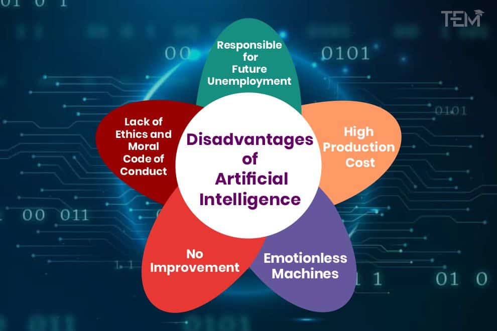

AI, or artificial intelligence, is the branch of computer science that deals with creating machines and systems that can perform tasks that normally require human intelligence, such as reasoning, learning, decision making, natural language processing, computer vision, and more. AI has been advancing rapidly in recent years, thanks to the availability of large amounts of data, powerful computing resources, and innovative algorithms.
One of the biggest benefits of Artificial Intelligence is that it can significantly reduce errors and increase accuracy and precision. The decisions taken by AI in every step is decided by information previously gathered and a certain set of algorithms. When programmed properly, these errors can be reduced to null.
Example:
An example of the reduction in human error through AI is the use of robotic surgery systems, which can perform complex procedures with precision and accuracy, reducing the risk of human error and improving patient safety in healthcare.
Another big benefit of AI is that humans can overcome many risks by letting AI robots do them for us. Whether it be defusing a bomb, going to space, exploring the deepest parts of oceans, machines with metal bodies are resistant in nature and can survive unfriendly atmospheres. Moreover, they can provide accurate work with greater responsibility and not wear out easily
Example:
One example of zero risks is a fully automated production line in a manufacturing facility. Robots perform all tasks, eliminating the risk of human error and injury in hazardous environments.
There are many studies that show humans are productive only about 3 to 4 hours in a day. Humans also need breaks and time offs to balance their work life and personal life. But AI can work endlessly without breaks. They think much faster than humans and perform multiple tasks at a time with accurate results. They can even handle tedious repetitive jobs easily with the help of AI algorithms.
Example:
An example of this is online customer support chatbots, which can provide instant assistance to customers anytime, anywhere. Using AI and natural language processing, chatbots can answer common questions, resolve issues, and escalate complex problems to human agents, ensuring seamless customer service around the clock.
Some of the most technologically advanced companies engage with users using digital assistants, which eliminates the need for human personnel. Many websites utilize digital assistants to deliver user-requested content. We can discuss our search with them in conversation. Some chatbots are built in a way that makes it difficult to tell whether we are conversing with a human or a chatbot.
Example:
We all know that businesses have a customer service crew that must address the doubts and concerns of the patrons. Businesses can create a chatbot or voice bot that can answer all of their clients' questions using AI.

The ability to create a machine that can simulate human intelligence is no small feat. It requires plenty of time and resources and can cost a huge deal of money. AI also needs to operate on the latest hardware and software to stay updated and meet the latest requirements, thus making it quite costly.
A big disadvantage of AI is that it cannot learn to think outside the box. AI is capable of learning over time with pre-fed data and past experiences, but cannot be creative in its approach. A classic example is the bot Quill who can write Forbes earning reports. These reports only contain data and facts already provided to the bot. Although it is impressive that a bot can write an article on its own, it lacks the human touch present in other Forbes articles.
One application of artificial intelligence is a robot, which is displacing occupations and increasing unemployment (in a few cases). Therefore, some claim that there is always a chance of unemployment as a result of chatbots and robots replacing humans.
For instance, robots are frequently utilized to replace human resources in manufacturing businesses in some more technologically advanced nations like Japan. This is not always the case, though, as it creates additional opportunities for humans to work while also replacing humans in order to increase efficiency.
AI applications automate the majority of tedious and repetitive tasks. Since we do not have to memorize things or solve puzzles to get the job done, we tend to use our brains less and less. This addiction to AI can cause problems to future generations.
